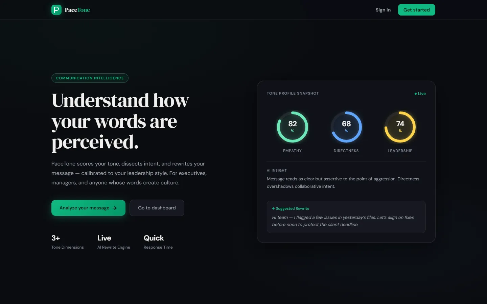
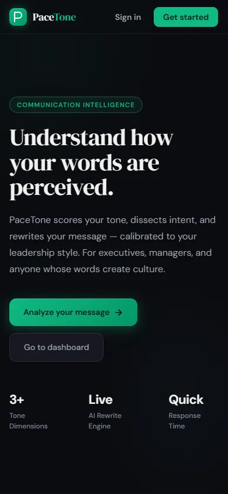
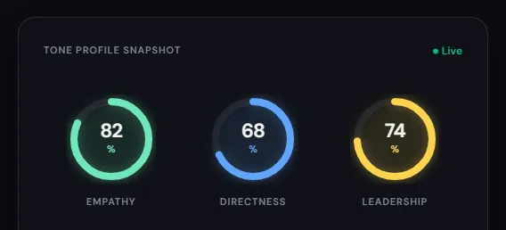
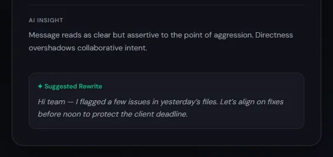
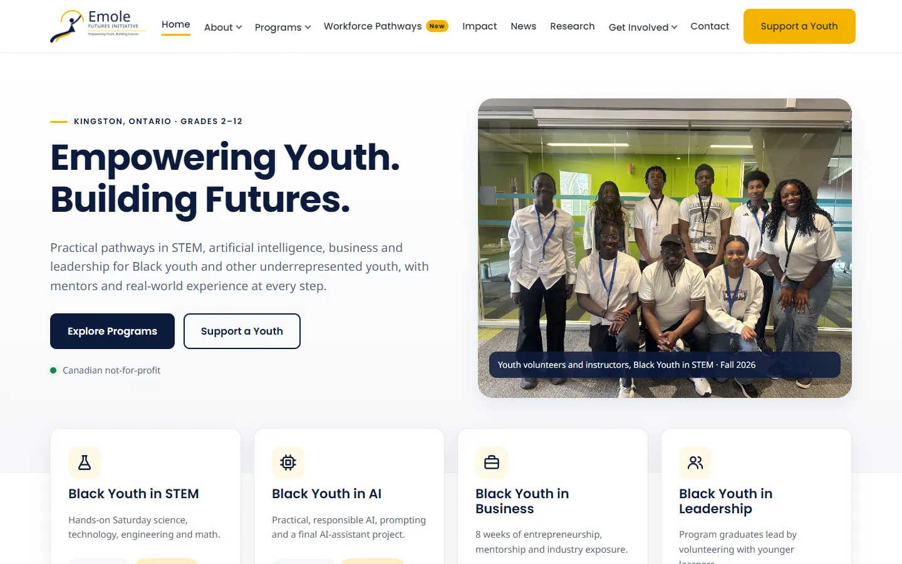

Hearing your own tone before anyone else does.


Overview
Pacetone scores a draft on empathy, directness and leadership, shows the exact phrases behind each score, and rewrites the message for the goal you choose.
I designed and built it on my own, from the product brief to the version that is live today.
The message you meant is not always the one they read.
People send messages that matter — feedback, escalations, client updates — with no signal of how they will land. The cost of the wrong tone is real: lost trust, defensive replies, problems that grow. And you only find out after you press send.
Grammar tools fix correctness, not perception. Generic AI rewriters go the other way and turn everything into polite filler that sounds like nobody.
“Help me sound firm without sounding like a jerk.” — the new manager I designed for first.
Three rules I held the product to.
Before any screens, I wrote down what would make Pacetone different from asking a chatbot to “make this nicer”.
- Name the toneThree clear scores instead of one vague label, so you know which part of the message to fix.
- Show the whyPoint at the exact phrases behind each score and explain them, rather than just grading the whole draft.
- Sound like youRewrites follow your goal and your voice, in plain human language, not AI-speak.
From a draft to a message you can send.
A score you can act on
Every draft gets a tone profile. The three numbers sit side by side, so it is obvious when, say, directness is drowning out empathy.

The reason, then the rewrite
Below the scores, Pacetone says in one sentence what is going wrong, then offers a rewrite that keeps your point and fixes the tone.

Built to be trusted with your words
People paste sensitive drafts into Pacetone, so I kept sign-in self-hosted rather than handing it to a third party, stored everything in a Postgres database I control, and ran automated accessibility checks inside the end-to-end tests.
Where it stands.
Pacetone is live, and the next step is a paid beta.
Reflection
A rewrite is easy to copy. Explaining why a phrase lands badly is not, and putting that first shaped every screen. It is also where Pacetone goes next: showing people their own patterns over time, not just fixing one message.
